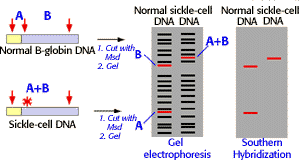

Human Genetics Problem Set
Problem 2 Tutorial: Using RFLP-analysis to hunt for human genes
When RFLP analysis is used to search for a human gene,
the strategy is to first locate?
D. any DNA marker co-inherited with the genetic trait of interest |
| RFLPs, or "restriction fragment length polymorphisms," is a term to describe different alleles of a genetic locus that can be distinguished by Southern hybridization. |
|
Consider a simple example of two different alleles for human ß-globin. The normal allele has three restriction enzyme cleavage sites, but a mutation that causes sickle-cell anemia also results in an allele that has only two cleavage sites. As shown in the figure below, the two different alleles display different patterns following gel electrophoresis and Southern hybridization.

|
|
Sickle-cell anemia is an autosomal, recessive human disease. A hypothetical pedigree for parents each heterozygous for the sickle-cell allele is shown in the figure below. The inheritance of the normal and sickle-cell allele in this family can be followed by RFLP-analysis. Each of the different genotypes, homozygous normal (AA), heterozygous carrier (Aa), and homozygous recessive with sickle-cell anemia (aa) can be identified by RFLP analysis.
|
| In searching for the location of a gene on the human genome, the first step is to determine a pedigree for a family that has different alleles of the gene of interest. Then Southern hybridization is carried out with many different polymorphic DNA probes until by chance a probe is found that is coinherited with the allele of interest. Coinheritance means that the probe and the genetic allele of interest are located near each other on the same chromosome (genetically "linked,") and do not segregate independently during meiosis. |


University of Arizona
Revised: November 5, 1998
Contact the Development Team
http://www.biology.arizona.edu
All contents copyright © 1996-98. All rights reserved.